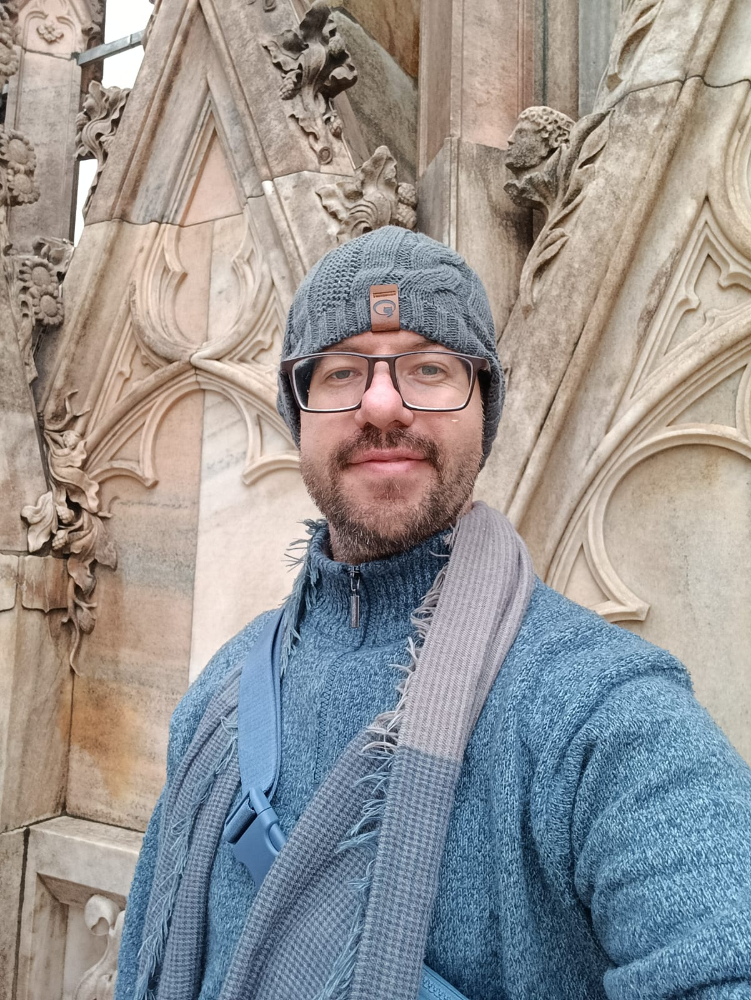
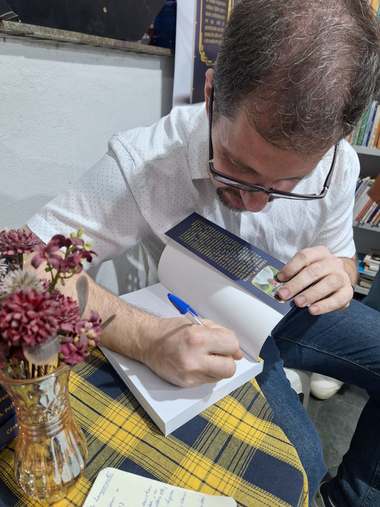
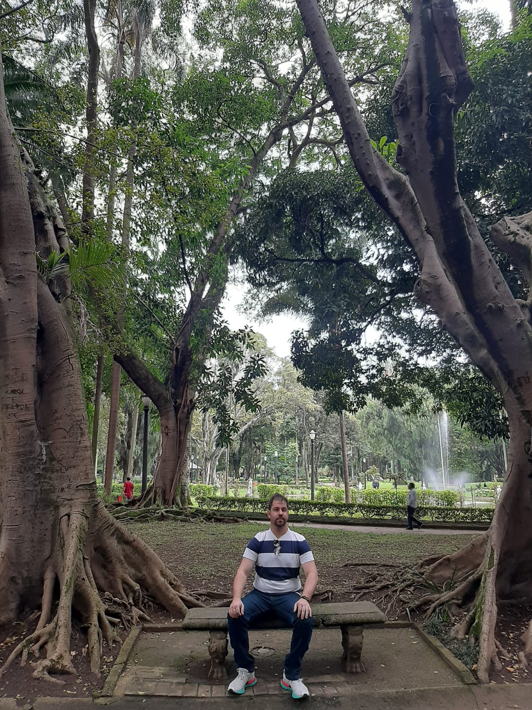

Olá, eu sou o César!
Sou natural de Machado, Minas Gerais, e atualmente resido em Pouso Alegre, no mesmo estado. Nascido em 12 de setembro de 1985, sempre fui movido pela curiosidade — especialmente por temas ligados à cultura e às artes. Iniciei minha trajetória profissional como professor de informática, mas acabei seguindo por muitos anos no ensino da Língua Portuguesa. A partir de 2022, descobri forte interesse pela área tecnológica. Comecei meus estudos de forma autodidata, depois com apoio de um tutor, até ingressar, em 2025, no curso de Engenharia de Software. Essa transição foi impulsionada pela minha natureza autodidata e pelo desejo constante de aprender e evoluir. Hoje, busco unir minha bagagem diversa para construir, passo a passo, minha jornada profissional na área das tecnologias com propósito e dedicação.



Sou amante dos estudos, da boa leitura e das pesquisas. Me interesso por diversos assuntos: música, atualidades, ciência, tecnologias, educação; bem menos com relação aos esportes, gostando apenas de assistir às Olimpíadas, por exemplo. No meu tempo livre me ocupo com jogos eletrônicos, livros, passeios, exercícios físicos (3x a 4x na semana) e programações de TV, como séries e filmes. Tenho grande amor pela natureza e adoro conhecer lugares com paisagens belíssimas. Finalizando sobre o que gosto, atualmente sou também escritor de literatura especulativa.